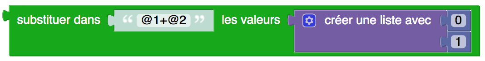
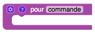
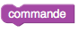
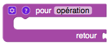
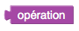
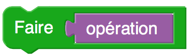
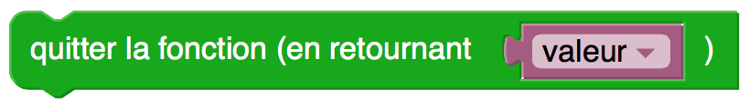

Catégorie : Programmation
Même si Blockly intègre par défaut les constructions de base utilisées en programmation, il n'en reste pas moins qu'il subsiste des oublis importants, surtout si on veut créer des programmes plus élaborés. Par exemple : la possibilité d'insérer des commentaires, d'utiliser des variables locales, de connaître l'état et la position de la souris, et d'afficher des expressions mathématiques. C'est la raison d'être de cette catégorie de blocs.
Commentaire
Paramètres
• une valeur texte (le texte vide par défaut, mais qui peut être
une expression textuelle quelconque)
Fonctionnement
• un commentaire ne modiie en rien l'exécution d'un programme : il
est tout simplement ignoré
• en fait, les commentaires servent à renseigner l'humain qui veut
comprendre le programme
Remarques
• éviter les commentaires «évidents», qui ne font que décrire en
mots l'action d'un ou de plusieurs blocs
Faire
Paramètres
• un bloc fonction avec composante retour
Fonctionnement
• exécute la fonction en question, et « oublie » la
valeur retournée, s'il y en a une
• effet visuel : transforme en un bloc fonction sans
composante retour
Remarques
• pour une discussion plus détaillée, voir l'appendice
ci-dessous
Faire après délai
Paramètres
• un bloc fonction avec composante retour
• une valeur délai (0 ci-dessus, mais qui peut être une
expression numérique quelconque)
Fonctionnement
• attend le temps spécifié, puis exécute la fonction en question
• effet visuel : transforme en un bloc fonction sans
composante retour
Remarques
• les blocs successifs d'un programme p5Visuel sont
donc exécutés séquentiellement, mais on n'attend pas
nécessairement
que l'exécution du bloc courant soit terminée avant de commencer
l'exécution du bloc suivant. C'est le cas, par exemple,
lorsqu'on accomplit une tâche comme charger un fichier. Il
existe plusieurs mécanismes pour gérer ce phénomène,
et l'exécution après délai en est un.
Variable locale
Paramètres
• un bloc variable
Fonctionnement
• déclare que la variable en question est locale
Remarques
• par défaut, toutes les variables de p5Visuel
sont globales
• ce bloc doit être utilisé à l'intérieur de la définition d'une
fonction (pour déclarer une variable locale à cette fonction)
• ce bloc n'a aucun effet s'il est utilisé en dehors de la
définition d'une fonction
Quitter la fonction
Paramètres
• une valeur (facultative)
Fonctionnement
• termine immédiatement l'exécution de la fonction contenant ce
bloc
• si un paramètre valeur est présent, la valeur
est retournée (dans le contexte d'appel de la fonction)
Est un nombre ?
Paramètres
• une valeur expression (vide ci-dessus, mais qui peut
être une expression textuelle quelconque)
Fonctionnement
• retourne vrai si l'expression en question
représente un nombre, et faux sinon
Remarques
• exemple de nombre reconnu : -14.4729 (point décimal et non
virgule décimale)
• exemple de nombre non reconnu : 1+1 (les opérations
arithmétiques ne sont pas acceptées)
Évaluer une expression constante
Paramètres
• une valeur expression (vide ci-dessus, mais qui peut
être un calcul mathématique sans variables)
Fonctionnement
• retourne la valeur de l'expression en question
• si l'expression comporte une variable ou une erreur,
retourne NaN
Remarques
• utile pour évaluer une expression entrée par l'utilisateur du
programme
Radians
Paramètres
• une valeur angle (0 ci-dessus, mais qui peut être une
expression numérique quelconque)
Fonctionnement
• suppose que angle est exprimé en degrés, et retourne angle
exprimé en radians
Degrés
Paramètres
• une valeur angle (0 ci-dessus, mais qui peut être une
expression numérique quelconque)
Fonctionnement
• suppose que angle est exprimé en radians, et retourne
angle exprimé en degrés
Bouton de souris enfoncé ?
Paramètres : aucun
Fonctionnement
• retourne vrai si le bouton de la souris est enfoncé,
et faux sinon
Position X souris
Paramètres : aucun
Fonctionnement
• retourne la coordonnée en x de la position de la
souris
• le système de coordonnées choisi dépend de la zone graphique choisie (à l'aide du bloc Choisir la zone graphique)
* le canevas (qui est une zone graphique avec des propriétés particulières)
* une zone graphique
* la fenêtre contenant la page web (dans le cas où aucune zone graphique n'a été spécifiée)
Remarques
• la position est spécifiée dans le système de coordonnées de l'objet choisi :
* l'origine (0,0) en en haut à gauche du canevas, de la zone graphique, ou de la fenêtre
* l'axe des x pointe vers la droite
* l'axe des y pointe vers le bas
• si aucun choix n'a été fait au moyen du bloc Choisir la zone graphique, on utilisera la dernière zone graphique créée
si aucune zone graphique n'a été créée, on utilisera la fenêtre
Position Y souris
Paramètres : aucun
Fonctionnement
• retourne la coordonnée en y de la position de la
souris
• le système de coordonnées choisi dépend de la zone graphique choisie (à l'aide du bloc Choisir la zone graphique)
* le canevas (qui est une zone graphique avec des propriétés particulières)
* une zone graphique
* la fenêtre contenant la page web (dans le cas où aucune zone graphique n'a été spécifiée)
Remarques
• la position est spécifiée dans le système de coordonnées de l'objet choisi :
* l'origine (0,0) en en haut à gauche du canevas, de la zone graphique, ou de la fenêtre
* l'axe des x pointe vers la droite
* l'axe des y pointe vers le bas
• si aucun choix n'a été fait au moyen du bloc Choisir la zone graphique, on utilisera la dernière zone graphique créée
si aucune zone graphique n'a été créée, on utilisera la fenêtre
Remplacer dans texte
Paramètres
• une valeur texte (rien ci-dessus, mais qui peut être
une variable quelconque)
• une valeur avant (vide ci-dessus, mais qui peut être
un texte quelconque)
• une valeur après (vide ci-dessus, mais qui peut être
un texte quelconque)
Fonctionnement
• dans le texte, remplace toutes les
occurences de la chaîne de caractères avant par la
chaîne de caractères après
Substituer valeurs dans expression
Paramètres
• une valeur texte (rien ci-dessus, mais qui peut être
une variable quelconque)
• une valeur liste (rien ci-dessus, mais qui peut être
une liste quelconque)
Fonctionnement
• dans le texte, remplace toutes les
occurences de @n par le (n-1) ième élément de la liste
Remarques
• exemple : si le texte est "@1+@2" et si la liste est [0,1] alors
le texte retourné sera "0+1"

• notez qu'on compte les occurences à partir de 1 (@0 ne serait
pas modifié) même si les éléments de la liste débutent au 0 ième
Finaliser expressions mathématiques
Paramètres : aucun
Fonctionnement
• demande à MathJax de faire le rendu de
toutes les expressions mathématiques fabriquées à l'aide de blocs
code math
Remarques
• ce bloc est habituellement placé à la fin des instructions
déclenchées par un clic de bouton, un changement de valeur
d'une glissière, ou de la fonction actions en boucle
Code math
Paramètres
• une valeur texte (rien ci-dessus, mais qui peut être
une variable quelconque)
Fonctionnement
• le texte entré en paramètre doit être un
code AsciiMath (par exemple : un code produit par le Visual
Math Editor)
• le texte retourné par le bloc est une version compréhensible par
MathJax
Remarques
• le recours au bloc code math ne provoque pas le rendu
de l'expression mathématique en symbolisme usuel :
pour celà, il faudra avoir recour au bloc Finaliser les
expressions mathématiques
Choix du type d'axes du canevas
Paramètres
• choix entre deux types d'axes
informatique (origine en haut à gauche)
mathématique (origine au centre)
Fonctionnement
• le choix des axes doit se faire avant de créer le canevas
• l'axe des x pointe toujours vers la droite
• l'axe des y pointe vers le bas (si les axes sont de type informatique) ou vers le haut (si les axes sont de type mathématique)
Remarques
• par défaut, les axes sont de type informatique
Essayer d'exécuter ... et faire ... en cas d'erreur
Paramètres
• des instructions (rien ci-dessus, mais ça peut être
une liste d'instructions quelconque)
• des instructions en cas d'erreur (rien ci-dessus, mais ça peut être
une liste d'instructions quelconque)
Fonctionnement
• les instructions sont exécutées
• s'il n'y a pas d'erreur lors de cette exécution, le bloc se termine
• en cas d'erreur lors de cette exécution, les instructions
en cas d'erreur sont exécutées
Remarques
• ce bloc sert surtout à gérer le débogage
Appendice : commandes VS opérateurs [retour (ou non) de valeurs par les fonctions]
(Pour les utilisateurs expérimentés)Blockly fait une distinction très nette entre deux types de fonctions :
• les commandes qui ne retournent pas de valeur (fonctions définies via des blocs sans composante retour),
 
• et les opérations qui en retournent une (fonctions définies via des blocs avec composante retour).
 
Par contre, dans le cadre de p5Visuel, on traduit les programme Blockly en JavaScript, qui est utilisé dans la fabrication de nos pages web. Or JavaScript ne fait pas une distinction marquée entre les commandes et les opérateurs : en fait, dans le cas d'une fonction associée à un clic sur un bouton, Blockly exige l'utilisation d'une opération, alors que la fonction appelée est foncièrement une commande.
Pour retrouver cette souplesse de JavaScript dans Blockly, p5Visuel propose des moyens de transformer
• une opération en commande : en utilisant le bloc Faire

• une commande en opération : en utilisant le bloc Quitter avec une valeur de retour dans la définition de la commande.
